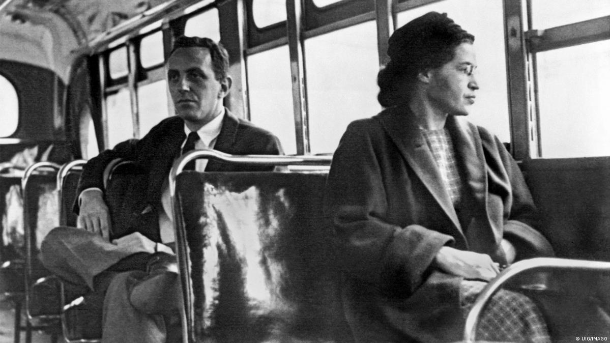

Pessoa
Rosa Louise McCauley, mais conhecida por Rosa Parks foi uma ativista negra norte-americana, símbolo do movimento dos direitos civis dos negros nos Estados Unidos. Ficou famosa, em 1º de dezembro de 1955, por ter-se recusado frontalmente a ceder o seu lugar no ônibus a um homem branco, tornando-se o estopim do movimento que foi denominado boicote aos ônibus de Montgomery e posteriormente viria a marcar o início da luta antissegregacionista.
